DATA 200: Data Systems for Data Analytics
Dickinson College
9/11/23
Starting the Jupyter Notebook Server
- The easiest way to start up Jupyter is by launching it through Anaconda Navigator

Click Launch under Jupyter Notebook
Starting the Jupyter Notebook Server
- Alternately, you can run the following command in a terminal window:
\(\hspace{1cm}\) jupyter notebook
Jupyter Notebook Server
- When you start Jupyter, it will open your default browser to the following URL:
http://localhost:8888/tree - Your browser should look something like this: 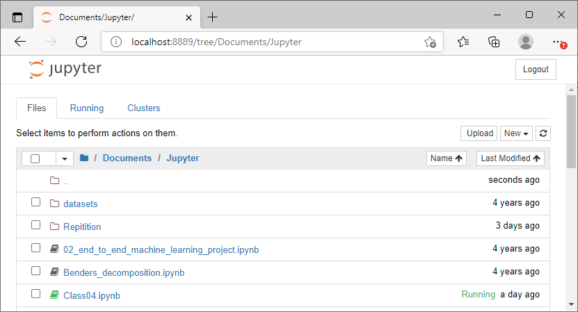
Notebook Server
- Note that right now you are not actually running a Notebook, but instead you are just running a Notebook server.
Creating a Notebook
- To create a new notebook, click the New button (upper right) and it will open a list of choices. Let’s choose Python 3. 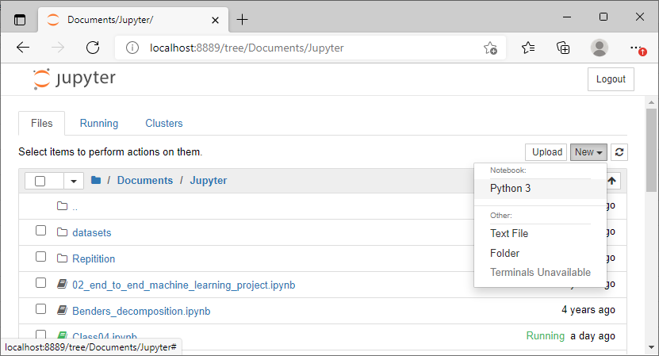
Naming a Notebook
The top of the page is the word Untitled . Move your mouse over the word Untitled and click on it to rename the notebook to My First Notebook . Note that this will also change the name of the file.
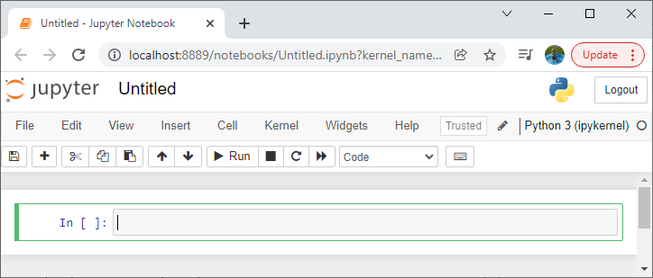
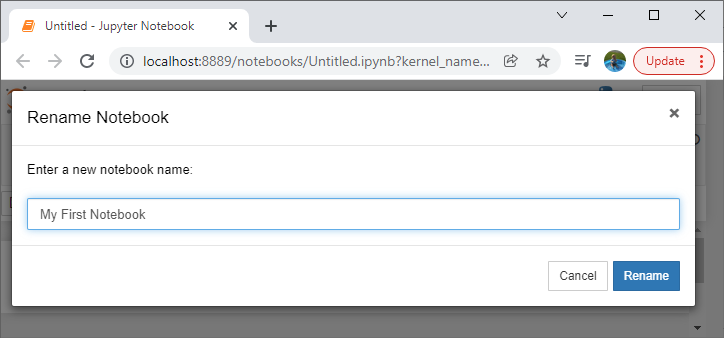
Running Cells
- A notebook’s cell defaults to using code whenever you first create one, and that cell uses the kernel that you chose when you started the notebook (in our case Python 3).
- Add the following code to the cell:
print("Hello Jupyter!")
- Add the following code to the cell:
- To execute a cell, you can select the cell and press the Run button. (Keyboard shortcut: Shift + Enter)
Code in Jupyter Notebooks
- If you have multiple cells in your notebook, and you run the cells in order, you can share your variables and imports across cells.
- This makes it easy to separate your code into logical chunks without the need to reimport libraries or recreate variables or functions in every cell.
- When you run a cell, you will notice that there are some square braces next to the word In to the left of the cell. The square braces will auto fill with a number that indicates the order that you ran the cells.
The Menus
The Jupyter Notebook has several menus that you can use to interact with your Notebook:
▶️ File
▶️ Edit
▶️ View
▶️ Insert
▶️ Cell
▶️ Kernel
▶️ Widgets
▶️ Help
The Menus
- The first menu is the File menu. Here you can create a new Notebook or open a preexisting one. This is also where you would go to rename a Notebook.
- The Save and Checkpoint option allows you to create checkpoints that you can roll back to if you need to.
- The Edit menu can be used cut, copy, and paste cells. This is also where you would go if you wanted to delete, split, or merge a cell. You can reorder cells here too.
- The View menu is useful for toggling the visibility of the header and toolbar. You can also toggle Line Numbers within cells on or off.
The Menus
The Insert menu is just for inserting cells above or below the currently selected cell.
The Cell menu allows you to run one cell, a group of cells, or all the cells. You can also go here to change a cell’s type, although the toolbar is more intuitive for that.
- The other handy feature in this menu is the ability to clear a cell’s output. If you are planning to share your Notebook with others, you will probably want to clear the output first so that the next person can run the cells themselves.
Adding Rich Content
- Jupyter Notebook supports adding rich content to its cells.
- There are technically four cell types:
Code,Markdown,Raw NBConvert, andHeading. - The
Headingcell type is no longer supported. Instead, you are supposed to useMarkdownfor your Headings. - The
Raw NBConvertcell type is only intended for special use cases when using thenbconvertcommand line tool. Basically, it allows you to control the formatting in a very specific way when converting from a Notebook to another format. - The primary cell types that you will use are the
CodeandMarkdowncell types.
- There are technically four cell types:
Styling Your Text
- Jupyter Notebook supports Markdown, which is a markup language that is a superset of HTML.
- Set a new cell to Markdown and add the following text to the cell:
Use single *underscores* or single *asterisks* to get italicsStyling Your Text
- When you run the cell, the output should look like this: 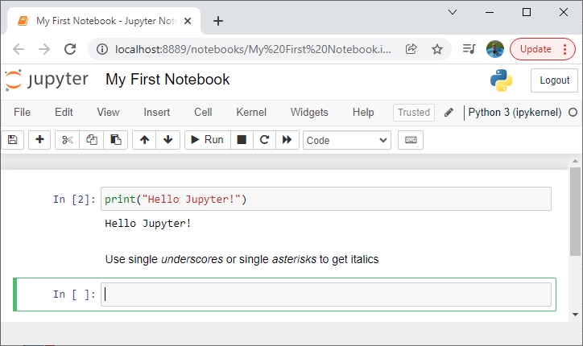
Styling Your Text
- To edit a Markdown cell after it has been run, just double click the cell.
- To make the text bold, use a double underscore or double asterisk. 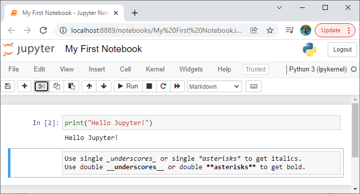
Headers
- Headers are created in Markdown using the pound sign.
- The more pound signs you use, the smaller the header. Jupyter Notebook preview it for you:
Headers
- When you run the cell, it will look like this: 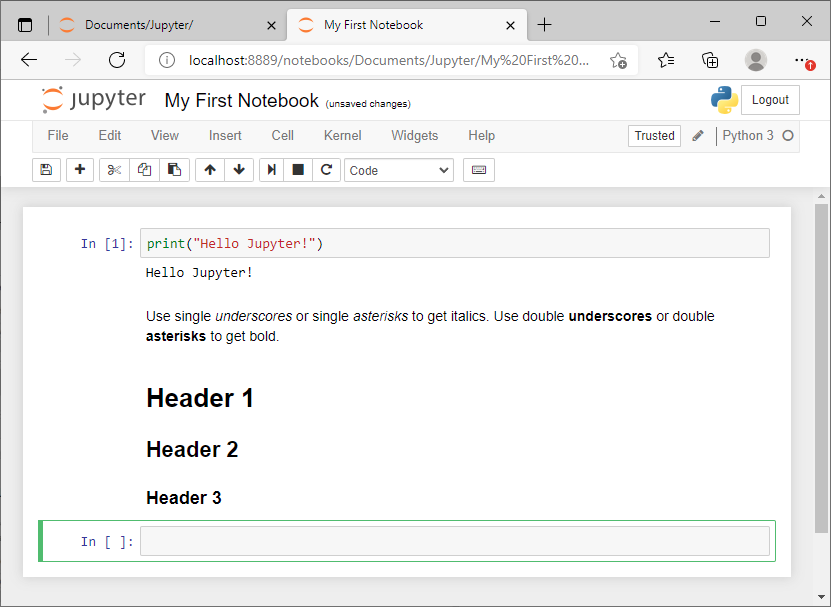
Additional Options
- You can switch to \(\texttt{monospace}\) font with a back single quotation mark (`) E.g., `\(\texttt{string}\)`
- This is useful if you want to include commands or Python output in the Markdown cell.
- Sometimes markdown doesn’t make line breaks when you want them. To force a line break, use the following: \(\texttt{<br>}\)
- Use the greater than sign (\(\texttt{>}\)) followed by a space to achieve an indent until the next carriage return.
Bulleted List
- To create bullet points, use one of the following methods. Note that each bullet point must be on its own line.
- An asterisks ( * ) followed by one or two spaces
- A hyphen ( - ) followed by one or two spaces
- To create a sub-bullet, press Tab before entering the bullet point before using one of the methods described above.
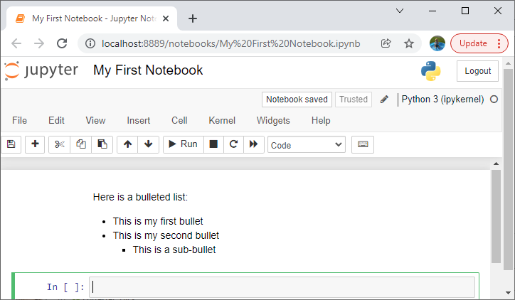
Before running the cell
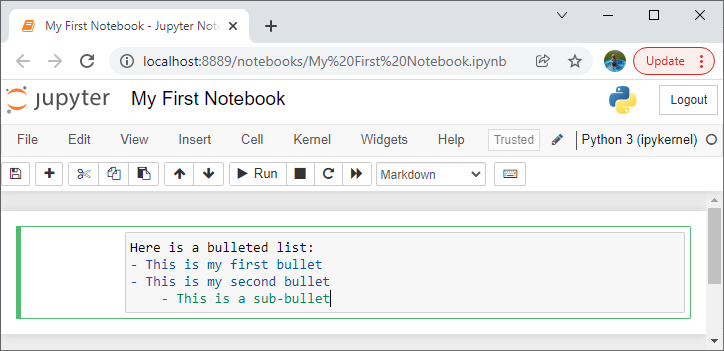
After running the cell
Numbered Lists
- To create a numbered list, enter \(\texttt{1}\). followed by a space. If you are lazy, you can even use \(\texttt{1}\). before each entry and the list will be numbered correctly when you run the cell.
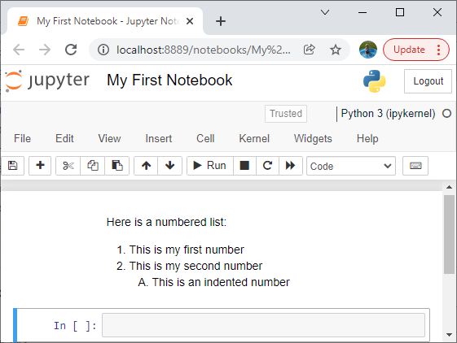
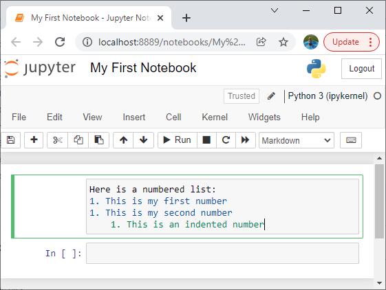
Mathematical Symbols
- You can create mathematical expressions using LaTeX syntax by using ( $ ) symbol:
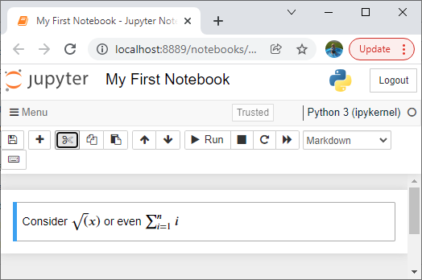
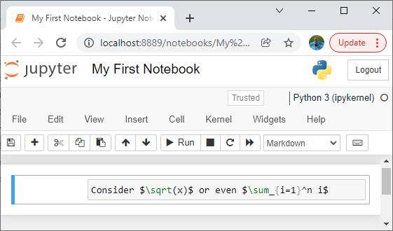
Additional Features
- Other available features include:
- Inserting graphics
- Using HTML code
- Inserting web links
- Inserting tables
- …and more
Git & Github
- Git is an open source version control language, developed in 2005.
- GitHub is a cloud-based hosting service that lets you manage Git repositories
- Extremely widely used in the industry
- Similar to Dropbox, OneDrive, but is more sophisticated for collaborative work: version control
- GitHub is a cloud-based hosting service that lets you manage Git repositories
Git & Github
- The files are stored in a “repository”, or “repo” that are simply folders containing the files for a project.
- Suppose you want to contribute to the TheGreatestApp repo.
- You first “fork” the repo, which is a way to “clone” the original repo files, which creates an identical repo under your account’s name.
- Suppose you want to contribute to the TheGreatestApp repo.
Git & Github
- You work on your great idea to improve the app locally, and edit the files in your clone repo.
- Once you are done, you first “commit” your changes.
- “Commit”ing basically is a manual way of overwriting files.
- Then you push your changes to your clone repo such that the files are modified and uploaded.
- Once you are done, you first “commit” your changes.
Git & Github
- Note that nothing has happened to the original repo so far.
- You finally send a “pull request” to the owner of the original repo.
- A pull request automatically shows the account owner what changes you have made in a nice intuitive side-by-side window.
- You can add a message at this stage and communicate.
- You finally send a “pull request” to the owner of the original repo.
Git & Github
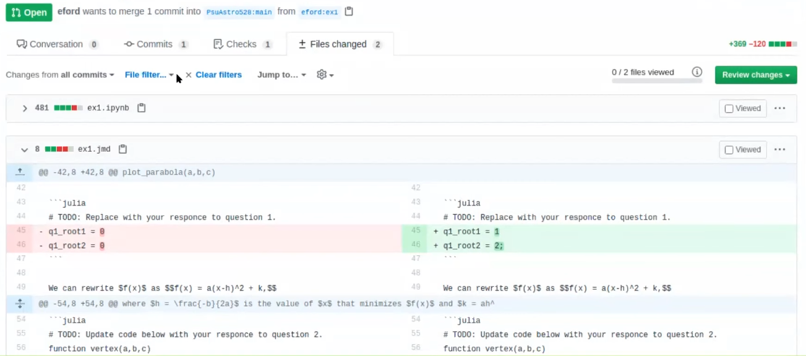
Git & Github
- After setting your own local repo via “fork”
- commit
- push
- pull request
Git & Github
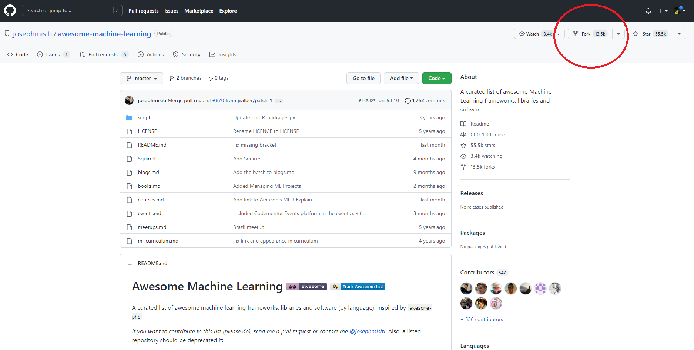Git & Github
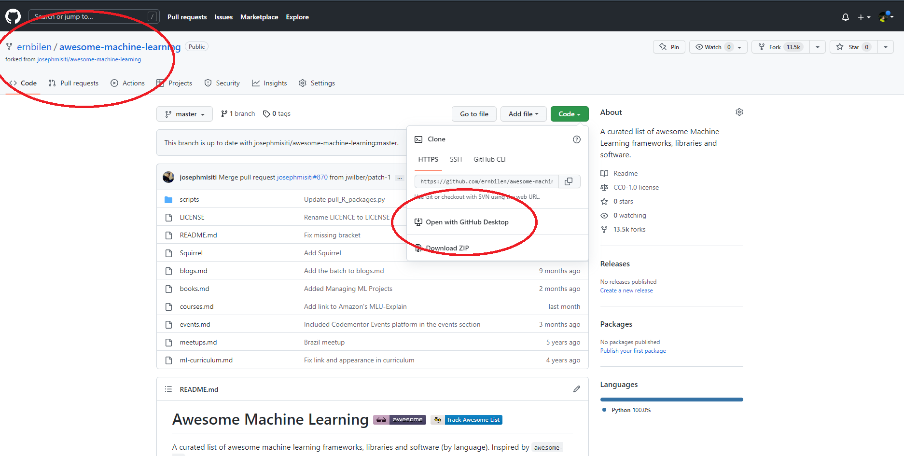Git & Github
- You can use browser, GitHub Desktop App, or command line to interact with your repo
Git & Github
- Edits will be displayed on the interface, after which you can press “commit to master”, i.e. to your local repository. 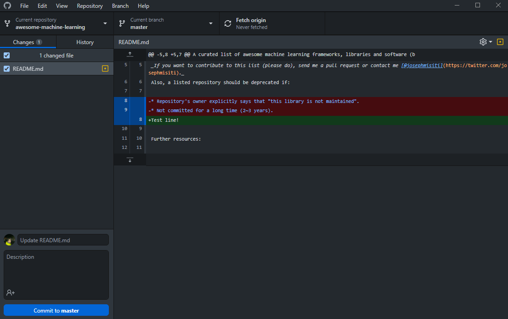
Git & Github
- You are now ready to “push commits to the origin remote”, this time to your “cloud” repository. 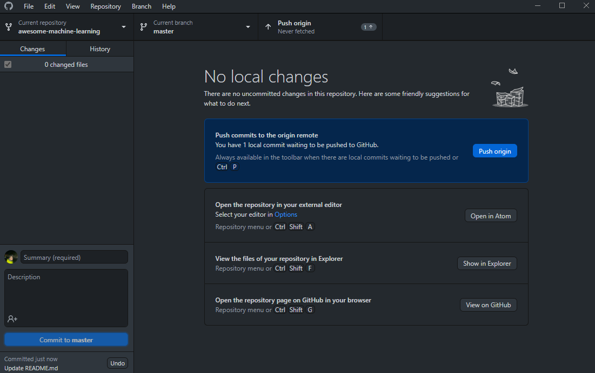
Git & Github
- To send your changes to the owner of the original repo, click on “create pull request”. 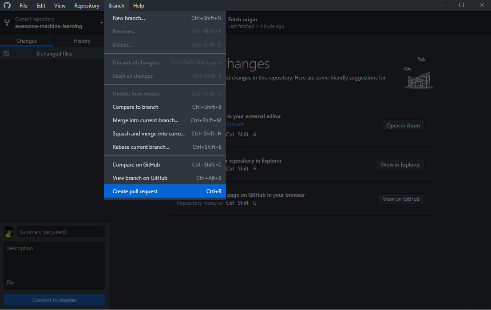
Git & Github
- You can write a comment and explain your reasoning in updating the code on this screen. 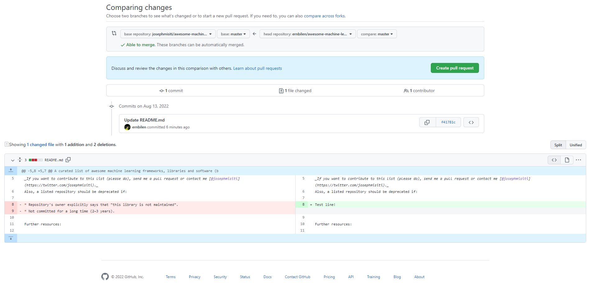
Git & Github: command line
- After setting your own local repo via “fork” or “clone”
- add files (only for command line)
>git add --all - commit
>git commit --m "descriptive message"- You can run
>git statusto check which files are changed
- You can run
- push
>git push - pull request
>git pull
- add files (only for command line)
For more git commands:
https://about.gitlab.com/images/press/git-cheat-sheet.pdf
Github Classroom
- IMPORTANT!⚠️ We will use Github Classroom to make things more efficient and easier. (free service)
- After setting your own local repo via “fork” or “clone”
Github Classroom
- IMPORTANT!⚠️ We will use Github Classroom to make things more efficient and easier. (free service)
After setting your own local repo via “fork” or “clone”- You will receive an invitation email for each assignment.
- Accepting the invitation automatically forks my repo and creates your own local clone repo.
- You can work on your assignment in your local repo, do any edits.
Github Classroom
- Once you have your local repo, you can use the Github Desktop app, or any browser to upload your assignment via
- commit
- push
pull request:Also automated. Once you push your files to your local repo, everything gets delivered automatically.
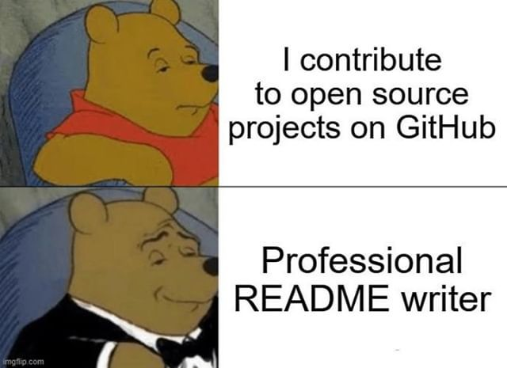